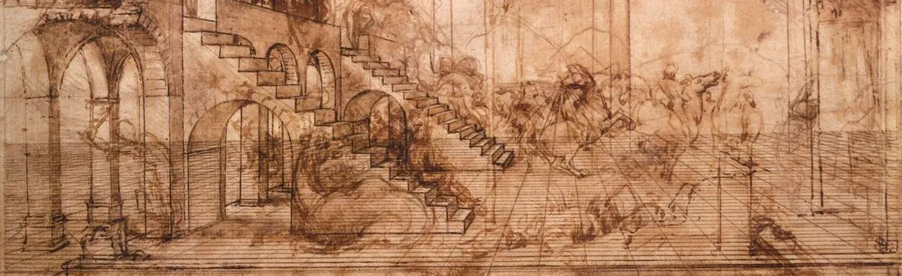
Leonardo di ser Piero da Vinci, más conocido como Leonardo da Vinci, fue un polímata florentino del Renacimiento italiano. Fue a la vez pintor, anatomista, arquitecto, paleontólogo, botánico, escritor, escultor, filósofo, ingeniero, inventor, músico, poeta y urbanista.
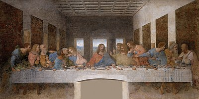
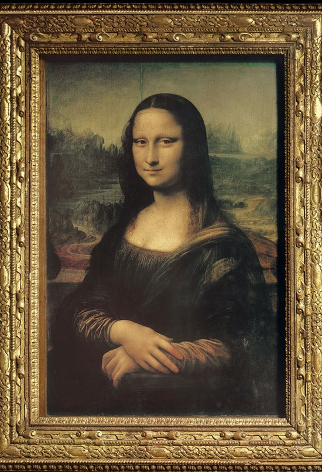
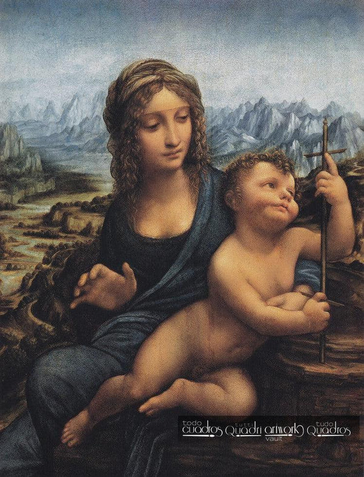
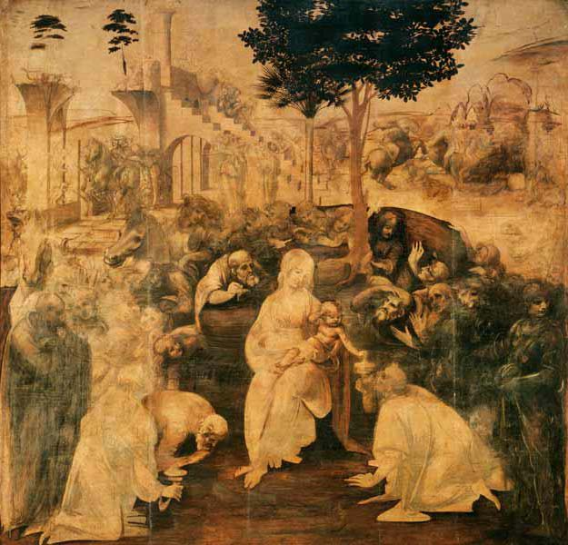
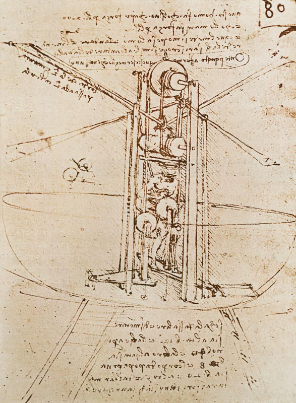
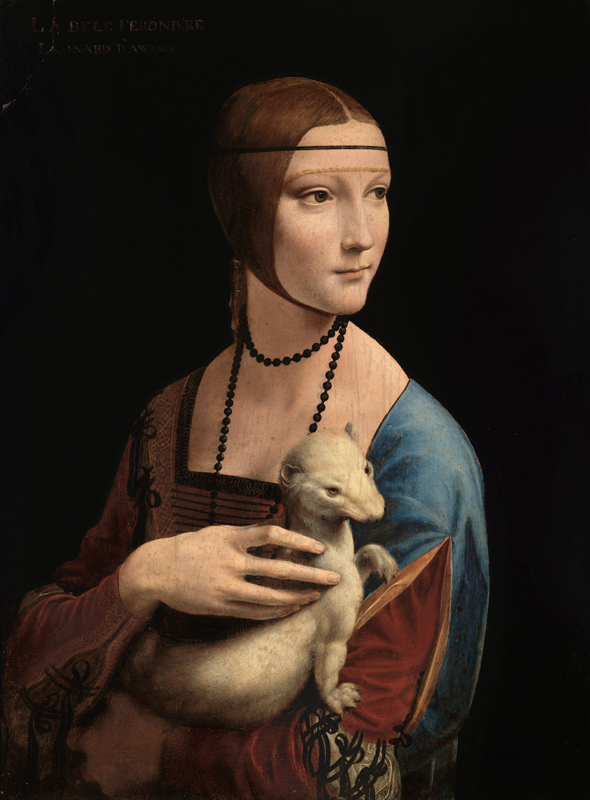
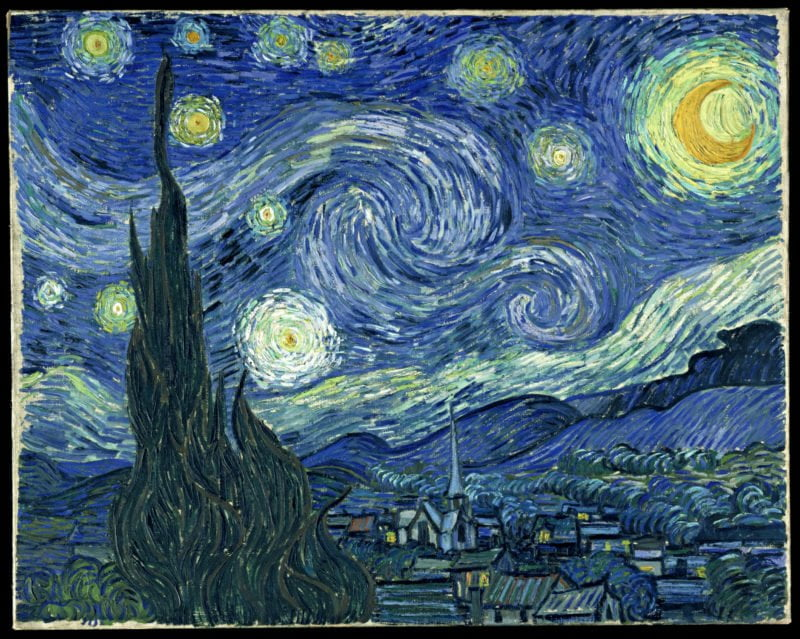
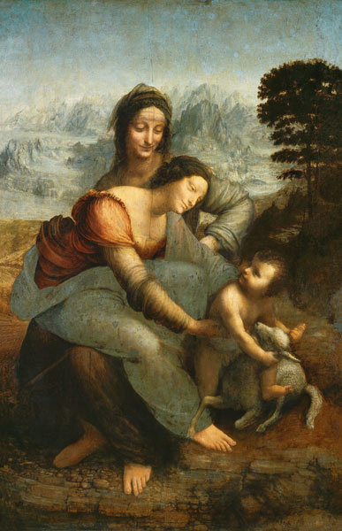
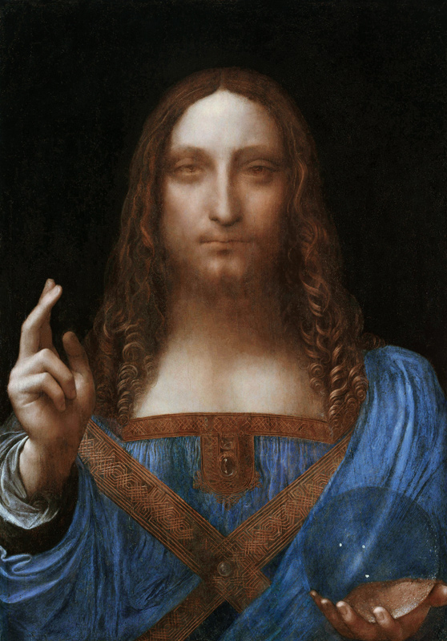
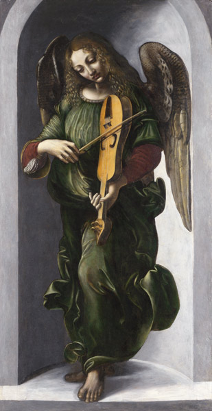
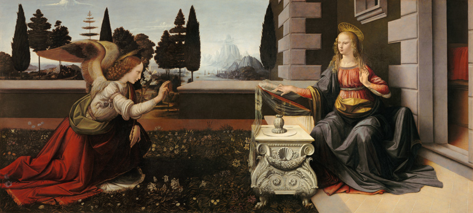